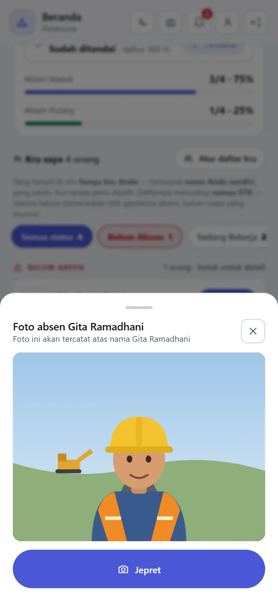
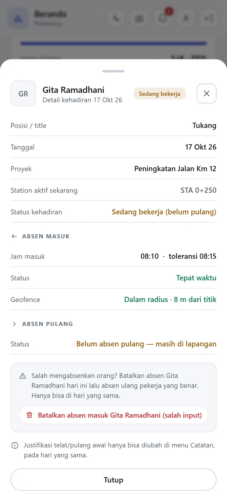
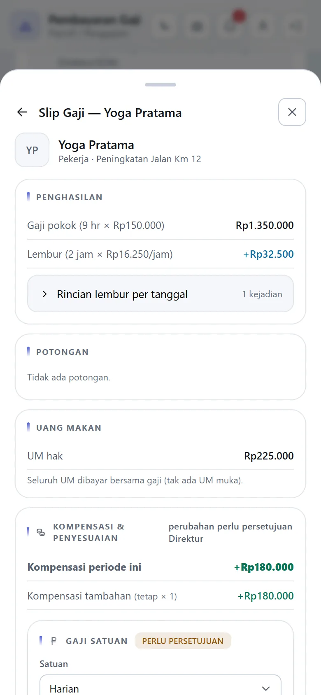
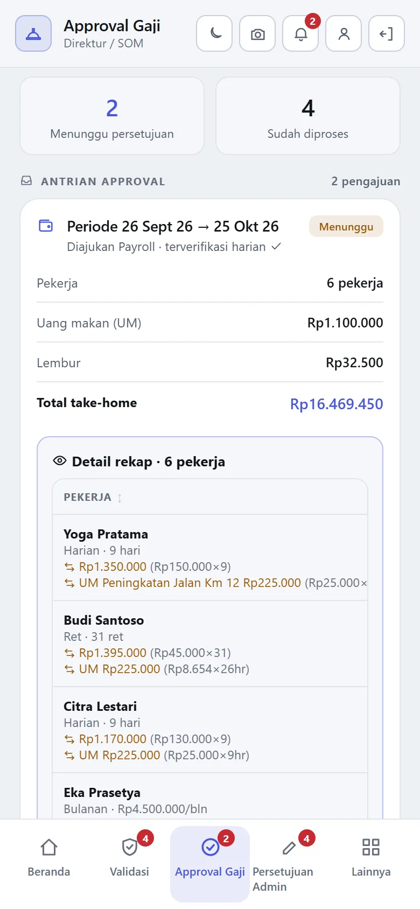
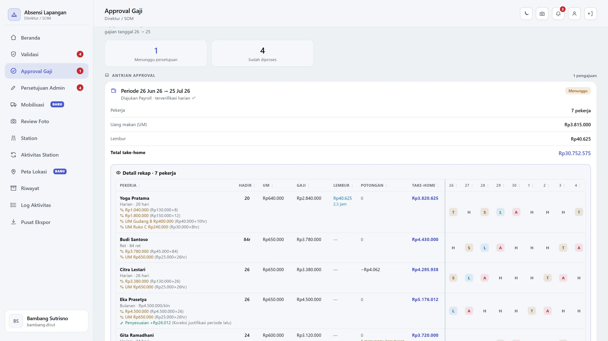

Time sheet kertas dan rekap Excel saya ganti dengan aplikasi yang dipakai setiap hari oleh mandor di lapangan, staf payroll, dan direktur. Saya menyusun aturannya, membangun dan menjalankannya, lalu menyerahkannya ke pengembang internal.
Demo dan video memakai data fiktif. Nama orang, perusahaan, dan proyek disamarkan.
Angka produksi per 23 September 2026, sekitar dua bulan setelah aplikasi mulai dipakai.
Mandor memotret tiap anggota kru. Jam dan titik GPS tercatat otomatis, lalu dicocokkan dengan radius proyek atau titik station jalan yang sedang dikerjakan.
Absen dan fotonya disimpan di HP, lalu terkirim sendiri saat sinyal kembali. Aplikasi dipasang dari browser (PWA), tanpa Play Store.
Satuan harian, bulanan, per jam, atau per ritase. Lembur hanya dibayar bila disetujui kepala lapangan. Uang makan mengikuti proyek. Hasilnya slip per orang dan ekspor Excel.
Payroll mengajukan, Direktur memeriksa rincian per pekerja lalu menyetujui, dan rekap terkunci. Perubahan tarif oleh admin juga menunggu persetujuan Direktur.
Peran lapangan tidak menerima angka rupiah sama sekali. Aturan ini dijaga di server, bukan sekadar disembunyikan di layar.
Lupa absen pulang, absen di luar radius, dan foto yang mencurigakan masuk antrean tinjau. Selama belum diputus Direktur, gaji tidak dipotong.





React + TypeScript (PWA)NestJSPostgreSQL + PrismaFastAPI untuk Excel & PDFDocker di VPSCloudflare R2
Setiap rilis wajib lolos gerbang uji: 377 skenario end-to-end, 220 uji keamanan hak akses, dan hampir 900 unit test. Lebih dari 65 rilis dalam sekitar tiga bulan, masing-masing tercatat di log rilis.
Pilih peran mana saja: Pelaksana, Payroll, Direktur, sampai Admin. Semua tombol berfungsi dengan data contoh.
Buka demo